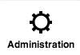

Sign in to Small Improvements as a user with administrator permissions.
Select the Administration icon shown below.

Enter the following Application Issuer URL, as shown above.
Sign into the Okta Admin dashboard to generate this value.Enter the following HTTP Endpoint, as shown above.
Sign into the Okta Admin dashboard to generate this value.Enter the following x.509 Certificate, as shown above. Be sure to copy the Begin Certificate and End Certificate lines.
Sign into the Okta Admin dashboard to generate this value.